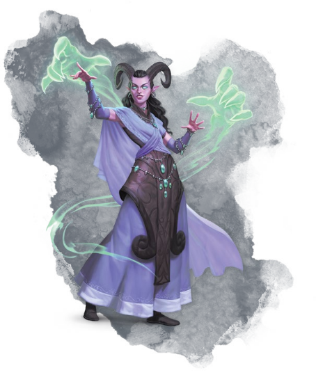

一位遵循兽形之道的武僧追求身体的完美，珩磨他们的身体，就像铁匠磨刀一样。 它的传统是从化兽者和用牙齿和爪子战斗的生物文化中汲取的。 这些都已经演变成武僧的一个宗派。
俑心流Forged Heart是战俑探索其自身构造潜力的最新途径。 这既涉及到自身的进化以及强化肉体强度。
魇衣流Nightmare Shroud源自离梦人的习俗。比起锻炼肉体，他们更倾向使用灵力投影，制造出暗影之爪。 他们把物理的打击和精神上的攻击混合在一起，将恐惧植入敌人的内心。 离梦人通常以他们的梦灵quori精神体造型包裹着自己，但是这个流派武僧的精神体造型可以是任意形状。
诡刃流Traveler’s Blade.是由幻身灵而发展起来的，为修炼者提供了无法被缴械的多功能武器。 修炼者可以长出骨刃或长指甲，或伸展四肢以打击远处的敌人。
兽形流Weretouched是由拥护Olarune（月亮）的化兽者开发而来，意在加强化兽者的天生武器和优势。
在3级选择超体宗后，你的武艺Martial Arts会让徒手打击更加致命。你可以用d6来代替徒手打击的正常伤害。 该骰子在第5级变为d8； 第11级的d10； 和第17级的d12。 这个替换的伤害只能应用于徒手打击，而不能用于武僧武器。
从第3级开始，选择这个超体宗起，选择一个流派并获得对应的特性。
俑心流Forged Heart.
你的徒手攻击被认为是精金武器。此外，当你徒手攻击一个生物时，你可以花费1点气Ki使其进行一次力量豁免。如果豁免失败，该生物将受到与徒手攻击相同类型的额外2d6伤害，并能被推到离你15英尺远的地方。成功豁免后，该生物只受到1d6点的额外伤害，而且不会被击退。
魇衣流Nightmare Shroud.
当你徒手攻击一个生物时，你可以用1点气Ki来攻击它，使它进行一次感知豁免。豁免失败时，它会受到1d6点的心灵伤害，并使他对你具有恐慌Frightened状态持续到你的下一轮结束。如果豁免成功，它将对该技能的恐慌Frightened效果免疫24小时。
诡刃流Traveler’s Blade.
你的触及范围增加5尺。此外，在你的回合开始时，你可以最多消耗4点气Ki来进一步扩大你的触及范围。每消耗1点气KI，你的触及范围就会增加5尺直到回合结束。
兽形流Weretouched
每回合一次，当你徒手攻击一个生物时，你可以用1点气Ki撕裂你的目标并造成深深的流血伤口。在该生物的下回合开始持续1分钟，它会因此受到1d4点的挥砍伤害。如果该生物恢复了1点或更多的生命值，如果任何生物使用一个动作消耗医疗包healer’s kit一次，或者成功进行感知（医药）检定，检定DC等于你的气KI豁免DC，该效果就会提前终止。
当你达到第6级时，这种挥砍伤害将被视为魔法伤害，用于克服抗性和对非魔法攻击和伤害的免疫。当你达到第6级时，这种猛烈的伤害被认为是神奇的，目的是克服抵抗和抵抗非魔术攻击和伤害。
你有能力改变你的天然武器，长出爪子或强化你的拳头。 从第三级开始，当你使用武艺Martial Arts进行徒手打击时，你可以选择是用攻击造成挥砍、钝击或穿刺伤害。
从第6级开始，当你结束一次长休时，选择下列伤害类型中的一种：钝击Bludgeoning、穿刺Piercing、挥砍Slashing、冷冻Cold、闪电Lightning、黯蚀Necrotic、心灵Psychic、雷鸣Thunder。在你回合中，第一个被你徒手攻击的生物将额外受到1d6点该类型的伤害。如果你选择了钝击、穿刺或挥砍伤害，它将受益于你的真气驻拳Ki-Empowered Strikes能力，并被视为魔法伤害。
魇衣流武僧倾向于用该能力造成心灵伤害，俑心流武僧倾向于加强他们的钝击伤害，兽形流武僧则会磨出更锋利的爪子。但是，无论你是那一个流派，你都可以用该能力任意选择伤害类型。
从11级开始，当你进行力量（运动）或敏捷（特技）检定时，你可以用1点气Ki掷出额外的d20。你可以选择在进行检定之后，但在DM宣布结果之前使用此能力。选择其中之一的d20用于技能检定时，如果此检定具有劣势，则无法选择其中的最大值。
此外，卓越打击Manifest Blow的额外伤害增加到2d6。
在第17层，你把你的身体打造成了战争兵器。你根据所选的流派获得一项能力。你可以选择和之前相同的流派，也可以另做选择。
俑心流Forged Heart.当你被攻击时，你可以用你的反应来增加你的感知调整值（最低为1）到你的AC，包括触发这次反应的攻击。此效果持续到你的下一个回合开始。
魇衣流Nightmare Shroud.当你的卓越打击Manifest Blow对一个生物造成伤害时，溢出的灵能将在30英尺内最多波及3个由你选择的不同生物。这些生物会受到相当于你一半武僧等级的精神伤害。
诡刃流Traveler’s Blade.当你以徒手攻击对一个生物造成穿刺或挥砍伤害时，该生物将受到额外的1d8毒素伤害，并且必须在体质豁免检定中对你的气KI豁免DC检定成功，否则将具有中毒Poisoned状态持续到下一轮结束。
兽形流Weretouche.当你使用疾风连击的时候，你可以用附赠动作一次打出三下徒手打击，而不是两下。 并且这些攻击具有优势。
|
边栏：扮演一个超体武僧 作为一个超体宗武僧，你可以专注一个流派，或者你可以结合不同的风格。你从这个子类获得的能力和武僧的基本能力都能反映你控制和改变你物质形态的能力。当你使用轻身坠时，你可能会改变形状来制造滑行膜（诡刃流）或者用星质斗篷（魇衣流）来捕捉空气。无甲防御表现为防御式的形体变化，当你发展真气驻拳时，它表现为你天生武器的增强。 大部分的超体宗流派都是锻炼与生俱来的天赋：例如，诡刃流假设你是拥有变形能力的幻身灵。然而，任意其他种族都可以走这条路。如果你没有任何先天的变形能力或与梦灵的精神联系，那就由你和你的DM来解释你如何展现这些天赋。如果你不是离梦人，你的魇衣可能是一个祖先或情人的鬼魂，紧抓着你，帮助你战斗。如果你不是一个幻身灵，也许你被异变魔daelkyr或者瓦塔利斯的超级战士工程改变了——你不能改变你的脸，但是你仍然可以长出骨刃和伸展你的四肢来攻击远方的敌人。 |